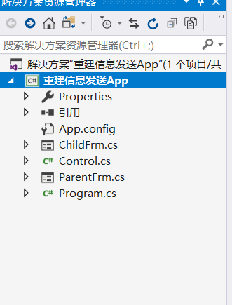
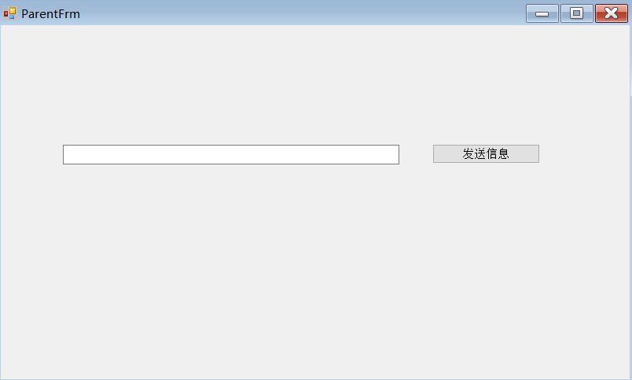

发布者订阅模式/客户端模式
对象与对象之间不可以直接调用其成员。如果直接调用其他对象的成员那么就是一个紧耦合。
--------1.

1.删除系统为我们准备的窗体。创建一个窗体应用程序
2.创建两个窗体对象，一个父窗体一个子窗体
3.在Program程序中修改程序启动窗体为父窗体
--------2.

1.为我们的两个窗体添加同样的控件
2.空间名称相同
--------3.
打开父窗体的代码
public ChildFrm ChildFrm { get; set; }//父窗口属性
private void ParentFrm_Load(object sender, EventArgs e) {
this.ChildFrm = new ChildFrm();
ChildFrm.Show();
}--------4.
我们在这里添加的代码作用在于:
添加了一个委托为我们对象与对象之间的解耦而存在。
我们在一个对象中我们需要尽量的避免对像与对象之间的耦合。该委托为下文做准备
public Action<TextBox> SendToChild { get; set; }//委托{可重用性}
public ChildFrm ChildFrm { get; set; }//父窗口属性
private void ParentFrm_Load(object sender, EventArgs e) {
this.ChildFrm = new ChildFrm();
SendToChild += ChildFrm.TestString;//多播委托，此委托链接一个方法，方法会转换为委托实例。
ChildFrm.ObjectToSend(this);
ChildFrm.Show();
}--------5.
创建了一个工厂方法，该方法我们用来检查传递进来的参数是否有错误的存在
public void TestString(TextBox x) {//根据外面传来的值我们决定是否操作。
this.txtMsg.Text = x.Text;
}--------6.
我们在子窗体中声明了一个方法，该方法只处理传递进来的一个参数，与外部对象实现了一种解耦
public static class Control
{
public static void ShowChildSendControl<T>(Action<T> actio, T x) {//工厂方法，检查是否曾在错误
try
{
if (actio != null || x != null)
actio.Invoke(x);
return;
}
catch
{
Console.WriteLine("出现异常");
}
}
}--------7.
添加了一个触发按钮的事件，该事件触发时内部会调用我们的委托，该委托已经指向了一个方法，这个委托作为工厂方法的一个参数传递，目的在于我们在工厂方法内进行检查，提高了代码的复用性。
private void BtnSendMsg_Click(object sender, EventArgs e) {//父窗口像别的窗口传值
Control.ShowChildSendControl(this.SendToChild, this.txtMsg);
this.txtMsg.Clear();
}